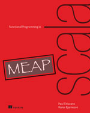

Purely Functional State
Functional Programming in Scala
Created by Mark Perry, @mprry, G+, Blog, LinkedIn, GitHub, maperry78@yahoo.com.au
|  |  |
Introduction
- Manipulate state using RNGs
- Explore issues
- Pattern of any stateful API
Standard RNG
- scala.util.Random has imperative API
- Uses side effects
scala> val rng = new scala.util.Random
scala> rng.nextDouble
res1: Double = 0.9867076608154569
scala> rng.nextDouble
res2: Double = 0.8455696498024141
scala> rng.nextInt
res3: Int = -623297295
scala> rng.nextInt(10)
res4: Int = 4
Testability
def rollDie: Int = {
- Off by one error
- Obvious - complicated defects are subtle
- Need to reproduce reliably
Fixing the RNG?
- Pass in the RNG?
def rollDie(rng: scala.util.Random): Int = rng.nextInt(6)
Functional RNG
- Make the updates explicit!
- Do not update (mutate) value
- Return new state as result
- Separate state computation from call sequence
trait RNG {
def nextInt: (Int, RNG)
}
RNG Implementation
object RNG {
def simple(seed: Long): RNG = new RNG {
def nextInt: (Int, RNG) = {
val seed2 = (seed*0x5DEECE66DL + 0xBL) & ((1L << 48) - 1)
((seed2 >>> 16).asInstanceOf[Int], simple(seed2))
}
}
}
scala> val rng = RNG.simple(42)
rng: RNG = RNG$$anon$1@3b5074d6
scala> val (n1, rng2) = rng.nextInt
n1: Int = 16159453
rng2: RNG = RNG$$anon$1@6ebc4e13
scala> val (n2, rng3) = rng2.nextInt
n2: Int = -1281479697
rng3: RNG = RNG$$anon$1@24e3e386Pure Stateful APIs
- Make API return next state
- Use same technique
class Foo {
var s: FooState = ...
def bar: Bar
def baz: Int
}
trait Foo2 {
def bar: (Bar, Foo2)
def baz: (Int, Foo2)
}
Using the API
def randomPair(rng: RNG): ((Int, Int), RNG) = {
val (i1, rng2) = rng.nextInt
val (i2, rng3) = rng2.nextInt
((i1, i2), rng3)
}
- Direct use will be tedious
- Refactor repetition
Exercises
def positiveInt(rng: RNG): (Int, RNG) = ???
def double(rng: RNG): (Double, RNG) = ???
def intDouble(rng: RNG): ((Int,Double), RNG) = ???
def doubleInt(rng: RNG): ((Double,Int), RNG) = ???
def double3(rng: RNG): ((Double,Double,Double), RNG) = ???
def ints(count: Int)(rng: RNG): (List[Int], RNG) = ???
State Actions API
- Functions have form: RNG => (A, RNG)
- State actions or transitions
- Combine using combinators
type Rand[+A] = RNG => (A, RNG)
val int: Rand[Int] = _.nextInt
Combinators
- Combine Rand state actions without explicit state
- DSL similarity?
type Rand[+A] = RNG => (A, RNG)
// pass RNG action without using it
def unit[A](a: A): Rand[A] = {
rng => (a, rng)
}
// map the state action A
def map[A, B](r: Rand[A])(f: A => B): Rand[B] =
rng => {
val (a, rng2) = r(rng)
(f(a), rng2)
}
def positiveInt(rng: RNG): (Int, RNG) = ???
def positiveEven: Rand[Int] =
map(positiveInt)(i => i + i % 2)
Combining State Actions 6.4.1
Afterword
- Functional Programming in Scala, Chiusano and Bjarnason
- Chapter 6, Purely Functional State
|
Created by Mark Perry, @mprry, G+, Blog, LinkedIn, GitHub, maperry78@yahoo.com.au